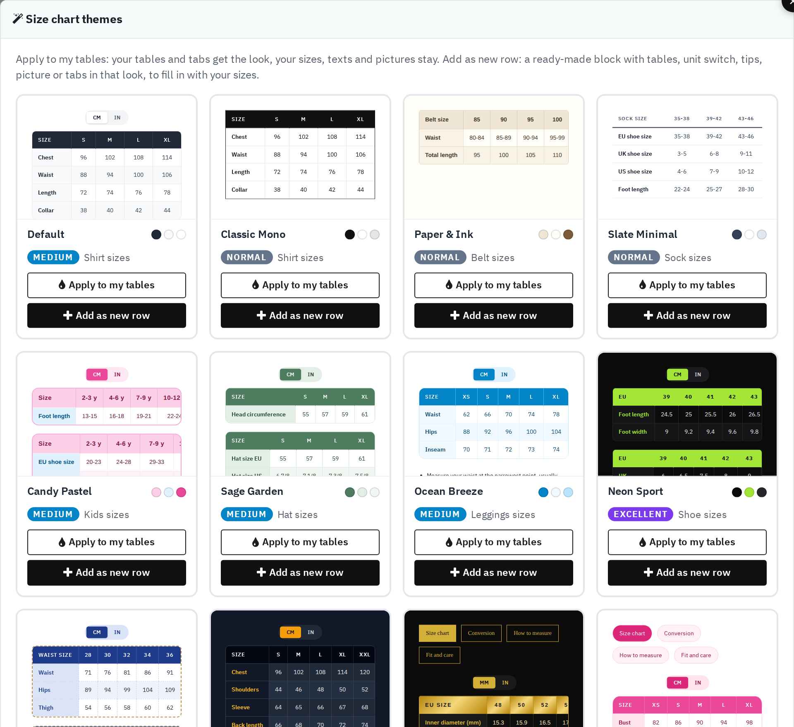

Themes opens a gallery of 13 ready-made looks, from simple (Normal) to rich (Ultimate). Each card offers two actions:
- Apply to my tables — your tables and tabs get the look; your sizes, texts and pictures stay. It asks for confirmation first, and Undo takes it back.
- Add as new row — adds a ready-made block in that look (tables, unit switch, tips, picture or tabs) to fill in with your sizes.
Tick Also style the popup button and window to give the popup button and window the matching colours too.
